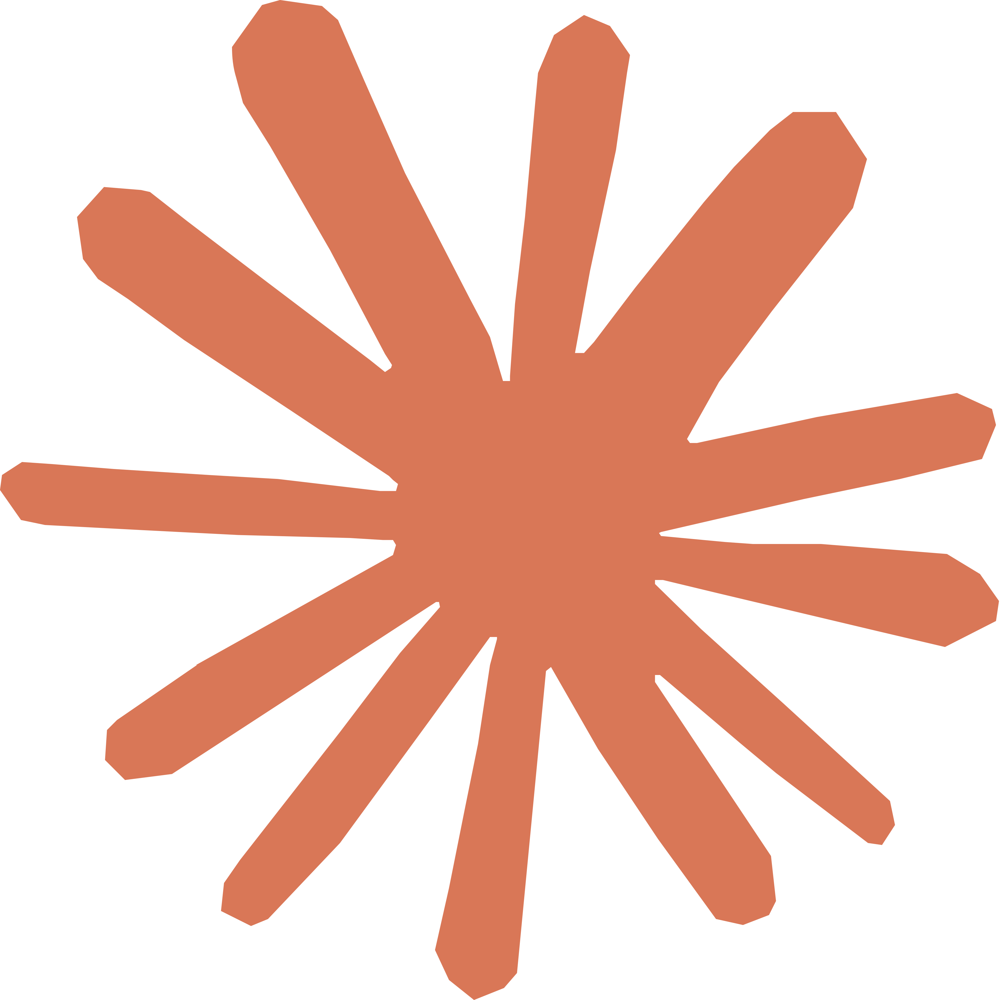

COORDINATION LAYER FOR AI AGENTS
Build together
without collisions.
./latch lets multiple AI agents work on the same codebase, in parallel, on any machine — with locks, awareness and a shared state layer.

AI agents are fast.
But they don't work together.
Multiple agents editing the same files leads to overlapping changes, broken builds, and lost work.
A single coordination
layer for every agent.
./latch adds a shared state layer with file locks, change awareness, dependency tracking, and real-time sync — so agents can work in parallel without stepping on each other.
Smart file locks
Exclusive write claims enforced before any edit touches disk.
Dependency graph
Understands imports and blocks the blast radius of changes.
Real-time awareness
Agents see peer actions, active tasks, and locks dynamically.
Patch sync
Propagates patches safely across all machines in milliseconds.
From command to coordination.
Everything runs through ./latch — a lightweight service that sits between your agents and the filesystem.
See agents work together.
A real-time view of what's happening in your repo. Locks, edits, and syncs across all machines — in one place.
Two commands
on the host.
Clone the repo, link the CLI, and you're ready. Works with any agent and any editor.
1$npm install -g @latch/cli # install the CLI
2$latch login # authenticate
3$latch init # link your project
4$latch serve # start local latchParallel agents. Real productivity.
Faster development
Run multiple agents on the same codebase simultaneously without stepping on changes.
Fewer conflicts
Exclusive file locks and dependency graph awareness eliminate merge collisions at the source.
Any workflow
Works smoothly with Claude Code, Cursor, Copilot, Codex, Antigravity, or custom agents.
Open and extensible
Self-host on your own machine, customize hooks, or integrate directly via local REST and WebSocket APIs.